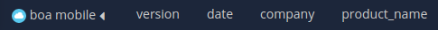

Analyzing Data¶
This chapter covers how to interpret the data generated by the Signals Analytics Engine as well as how to interact with your data to find meaningful insights.
Analytics Engine Output¶
The Signals Analytics Engine generates new datapoints based on your unstructured data. This information is represented in the following way.
Buzzwords¶
The Signals Analytics Engine reads through every piece of text in a dataset and compares every possible combination of words.
The Buzzwords visualization is made of every statistically significant N-Gram found in the textual data. In order for an N-Gram to be deemed statistically significant, we look at how often they occur together in the dataset vs. how often they occur individually.

A word-cloud view of N-Grams

N-Grams in a detail list visualization
Topics¶
Topics are generated by performing unsupervised machine learning on top of the N-Grams to determine hidden themes and group the documents accordingly.
Any document can occur in more than one topic, therefore the % of documents contained in each topic will add up to > 100%
The Semantic Topics visualization can be represented in a donut chart or a network graph.

The words around each slice are just the top one or two N-Grams included in that topic. Each topic is represented by a slice of the donut chart. The order (starting at 12:00 and moving clockwise) and size of the slice is determined by the statistical relevance or “tightness” of that topic. The color of the slice represents the sentiment.

Semantic Topics represented in a network graph of related N-Grams. Each bubble represents an N-Gram, the size indicating the count, and the color indicating the sentiment. The lines show the level of connection, or co-ocurrence, between two N-Grams.
Temporal Trends¶
Temporal information accompanying structured and unstructured data is paramount in understanding quantitative events and their potential underlying relationships across disparate data sets. Signals utilizes time-series predictive analysis, deep learning, and event analysis to uncover trends and patterns across structured and unstructured data.

Topic Model trended over time. Each smaller bar represents a topic while the bar groups represent a time period.
Contributors¶
Contributors help to identify an individual’s influence in a data set.
Name: a list of unique identifiers mapped as “name” Count: the # of feedback from an individual or unique ID. Sentiment: The aggregated sentiment score on all the documents contributed by a contributor.

Interactions and Filters¶
Every interaction in the dashboard essentially applies a filter on your data. This method is designed to help you access insights learned from your unstructured or structured data, and tie it to other dimensions.
When interacting, the filters you’ve applied will appear at the bottom of the page next to the name of the dataset the filter is applied to.
Clicking on the name of the filter will remove it.
Filters can also be saved to a dashboard and can be set on one of three levels:
Dashboard-Level Filters¶
To set a filter on the entire dashboard, click the  icon in the bottom left corner inside your dashboard. This is the “global” filter panel for your dashboard.
icon in the bottom left corner inside your dashboard. This is the “global” filter panel for your dashboard.
Filters set from here will not persist when you leave the dashboard.
Tab-Level Filters¶
Tab level filters can be applied on a per-tab basis. To do this, click the  icon and select one of the two methods:
icon and select one of the two methods:
- Merge with the current query will allow you to set a permanent filter, but still interact with the data. Interactions with other tabs can still affect the data.
- Override the current query will apply the filter selections you make and freeze the visualizations so that the tab is no longer interactive. Selections on other tabs will not affect the data.
The main datapoints are available for selection from the Tab Detail page. Other datapoints can be accessed by clicking on the “+” icon next to Extra Structured Vis Parameters

Widget-Level Filters¶
Widget-level filters will override all other filters for that widget.
To apply a widget-level filter, you can either click on the funnel icon in the widget settings menu from your dashboard view, or you can apply a filter from the Create Your Own Widgets in the Options tab.

Widget Settings Menu